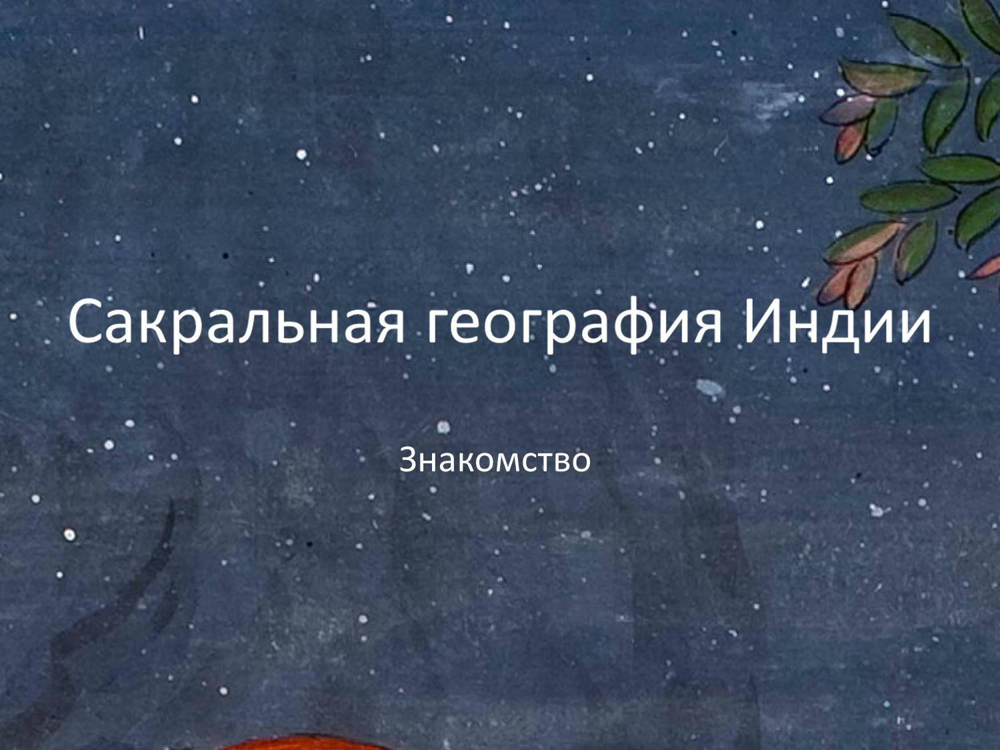

Курс «Сакральная география Индии» · Вводное занятие
Сакральная география Индии
Лектор: Сергей Викторович Щербак
Повторение: метафора тела и сакральная география YT/RT/AU
▶ Мы завершили прошлый раз, я не показывал этот слайд. Так, 18:00. Уважаемые друзья, приветствую вас на уже не вводном, а первом занятии нашего курса по сакральной географии Индии. И как мы договаривались, краткое содержание того, о чем мы говорили на вводной лекции Это прежде всего предмет, которым мы занимаемся, то есть сакральная география это не то, что можно о ней думать, это не непосредственная география, а скорее воображаемая география, которая решается пути которой прокладываются через воображение и религиозные практики. Это если совсем кратко, но это можно расширять.

Островное сознание Индии и телесная онтология YT/RT/AU
▶ У мысли есть расширитель. Индия получается в каком-то привилегированном положении, в отношении других регионов и других территорий, по которым тоже можно отслеживать подобные пути работы воображения. Она была островом и очень долгое время как бы островное сознание у него есть изолированность и она эта изолированность она сохраняется в даже через многие столетия тысячелетия это как бы такая парадигма и физической географии и культуры потому что культуры длинная память А вот что касается Индии, то она долгое время как бы в изолированности была и сформировала такое островное сознание, так сказать, хотя это не совсем так, потому что ее постоянно завоевывали, к ней проявляли интерес разного рода захватчики, а британцы считали ее вообще короной, жемчужиной в короне империи, то есть относились к ней как стране богатой, чрезвычайно интересной во всех отношениях, с мощнейшей культурой и полезной в экономическом и во всех остальных смыслах. Индия сама преображалась, она как бы не оставалась прежней, она пережила волны своего собственного изменения, своего преобразования внутри самой себя. И таким образом и внешние завоеватели, и изнутри себя изменяясь Индия все равно оставляла в себе какое-то хтоническое архаическое начало и это начало пожалуй можно определить как телесность.


Тело как генеральная метафора индийской культуры YT/RT/AU
▶ Вот все, что относится к телу, к его образу, к его восприятию, к его функциям это про Индию. Это определяет ее главную, главную онтологическую суть, на которую может накладываться все, угодно, в том числе интеллектуальная жизнь, эмоциональная, эстетическая, но вот тело, онтология тела и метафора тела она сохраняется в Индии через все столетия, завоевателей, все собственные увлечения Мхараты самой собой. Вот как бы такая генеральная метафора положила, проложила путь к уникальности сакральной географии этой страны, этой территории и сформировала разного рода идеи, которые которые вращаются вокруг телесности.

▶ Сергей Викторович, или выключаем показ пустой папки, или включаем презентацию. Давайте так, в смысле
▶ А, у меня не запущено, да? Да. А, понятно.
▶ Или никак? Есть презентации?
▶ Так ну вот сейчас видно или нет?
▶ Нет, вы видимо изначально включили показ какой-то конкретной папки. Вот он идёт, нужно остановить показ и запустить заново. Понял, хорошо. Сейчас делимся и делимся.
▶ Теперь другое дело. Так точно.
▶ А теперь, если вы ещё на весь экран в за
▶ А нет, нет, я так не хочу, то есть и мне и слушателям будет удобно,
▶ и тогда хотя бы сверху закройте те две жёлтых предупреждения, которые у вас высвечиваются в правом верхнем углу. Есть крестики,
▶ понял, да, сейчас закрою, пожалуйста, закрою. Ага, отлично. Так, итак, кратко содержание предыдущей лекции. Ну, в принципе, завершено. Да, то есть можно по нему вот эти пять минут, которые сообщают то, о чем было раньше сказано.
▶ Но в целом я передал. Единственное, что я, наверное, хотел еще обратить внимание на то, что метафора тела не примитивна, ее можно и нужно рассматривать через глубочайшую философскую и эстетическую традиции и мы это сможем показать и сможем доказать как это работает конкретно в Индии. Это как бы путь самой Бхараты. Антологию чужой культуры так просто на себя не примешь, в ней надо не просто пожить, в ней надо родиться, чтобы полноценно освоить язык и все типы отношений социальных и прочих. Вот и много чего еще, что передается молниеносно, как вот сейчас в социальных сетях какие-то мемы или идеи передаются практически как молния.

▶ Точно также и онтология другой культуры непостижима для внешнего наблюдателя это вот такой определенный факт можно пытаться стать хорошим знатоком или ретранслятором каких-то основных идей, но онтологически нет. То есть можно, но с большой-большой натяжкой, но лучше быть билингвой или трилингвой или сколько угодно ещё с самого раннего детства, тогда больше шансов на то, что получится. Поэтому вот эту метафору тела, её нужно всё время вспоминать, когда мы говорим даже о высокой философии, и пытаться понять, как она устроена изнутри сознания. Ну, то есть, мы это делаем. Европейский и научный аппарат для этого подходит и интеллектуальный всячески.
▶ То есть, так что максимально продуктивно и добросовестно это будем делать. Итак, тело, которое формируется, это тело, тело, естественно, не человеческое, то есть тело представление о высшем божественном сакральном. Оно в Индии, значит, разного разного масштаба бывает и, наверное, такой небольшой масштаб Мы можем это же действительно с мурти в храме, когда перед нами предстаёт какой-то образ божества, изваянный из металла или камня, или нарисованный. Вот, но иногда он предстает через сеть. Вот этот слайд я в прошлый раз не показывал, хотя презентацию отправил вместе с ней.


Тема лекции: тиртха и сеть тиртхаятры YT/RT/AU
▶ То есть сегодняшняя тема лекции у нас посвящена целиком киртхи. Объясню дальше, что это понятие означает. Вот это не совсем телесная здесь метафора, здесь скорее образ фокуса, фокусировки на на теле. Да, то есть, когда мы смотрим на человека, на вообще любой предмет объект нам нужно сфокусироваться вот киртха это своеобразный образ фокусировки но о титхе чуть чуть позже титха это как бы единичный способ настройки на видение божественного тела. Но у нее много других определений, просто это первое приближение, которое у нас сейчас нужно.


Тиртхики: паломники, соединяющие тиртхи в сеть YT/RT/AU
▶ В Индии так случилось, что вот эти тиртхи отдельные или места соприкосновения человеческого и сакрального объединились в сети. Сеть это система взаимосвязанных маршрутов, но при этом важно, что эти маршруты не статичны, у них нет такого вот фиксированного положения, как например там едем в Лондон, летим или как Лондон при этом у нас представляется такой незыблемой точкой. Вот в Индии для индийской сакральной географии, для индийского онтологического чувства важно движение. Те, кто включены в индийскую культуру, обладают этой онтологией и стараются приблизиться к высшему началу, к сакральным величинам, находится в постоянном движении это паломники тиртхики собственно они называются как тиртхики соединяющие тиртхи воедино И вот когда они собраны, то возникает полное познание тела Бхарата, тела божества. Ну вот это смысл данного слайда.


Литература курса YT/RT/AU
▶ А теперь мы перейдем к довольно важной части нашего курса, а именно литературе, которую я предлагаю в качестве важной для того, чтобы программно знакомиться с курсом сакральной географии Индии. Этого курса еще в российских вузах или каких-то образовательных проектах, ну, кроме вот того, который сейчас мы с вами осуществляем, нет. Поэтому это как бы область, развивающаяся область религиоведения, ну, лучше всего, наверное, представленная в Соединенных Штатах Америки. Поэтому что-то приходится делать заново и, в частности, оформлять то, что значимо в плане чтения, литературы. На русском языке не так много книг и концепций, которые, ну, как бы, написаны с пониманием того, что разговор идет именно о сакральной географии.

Диана Эк и «Сакральная география Индии» YT/RT/AU
▶ Они скорее с других позиций написаны, за исключением, может быть, представлено здесь зелененькой книге Ирины Петровны Глушковой из Института востоковедения. Она прямо и четко называется Подвижность и подвижничество, как бы постулируя идею движения как самого важного теория и практика. Вот она передо мной. Книга большая, о ней я расскажу чуть позже, потому что есть более важные программные тексты, с которыми, наверное, в первую очередь нужно ознакомиться. Наверное, на первом месте у нас будет книга, выделенная сейчас мной Дианы Эк, американской исследовательницы из Гарвардского, так, Гарвардского университета.
Марк Дычковский: взгляд изнутри традиции YT/RT/AU
▶ Она индолог, религиовед по первому образованию, как бакалавр, и о ней будет тоже отдельный слайд, следующий слайд. А пока вот как бы мы проводим такой обзор наших книг. Всё-таки я хотел бы сосредоточиться на еще двух версиях описания сакральной географии. В центре сверху верхнего ряда книг книга Марка Дычковского, и эта фигура для нас довольно важная и интересная. Это британский санскритолог польского происхождения.

▶ Мать у него была итальянка, а отец поляк. Они после, нет, во время войны, Второй мировой, переехали в Британию, и там жили. В общем, карьера его складывалась поначалу как академического ендолога, но потом в возрасте 22 лет он посетил Индию и навсегда она очаровала его сердце. Надо сказать, что религиозно он принял некоторые идеи, собственно, не некоторые, а стал Кашмирским шаваитом в традиции При этом сохранял свою жизнь, сохранял двойную онкологию, то есть продолжая оставаться ученым, индологом, он писал тексты, книги, много текстов написал о Индии, философии, ее метафизике, ее религии как бы изнутри опыта своего. Много чем занимался.
▶ Его книгу я предложил в качестве программной Путешествие в мир Танг, но это не означает, что только этой книгой можно как бы она является единственной. Вот здесь перечень книг, которые изданы в разные годы краткое содержание, почему эти книги полезны для сакральной географии. Естественно, что все они, к сожалению, еще не переведены на русский язык, как и книга Диана Эк, чего бы очень хотелось, но, наверное, это в будущем. Вот взгляд в Марка Дычковского скорее для нас важен как взгляд человека, который находится внутри индийской антологии, примерил ее на себя, написал диссертацию, писал он диссертацию о значит скажем так энергиях нам нужно бы, конечно, сохранить академическую строгость, чтобы не переходить на язык, понятийный язык популярной эзотерики, нью-эйджской терминологии. Поэтому здесь достаточно сложность есть вот потому что погружаться именно в тот язык с его определениями очень бы не хотелось но из песни слов не выкинешь и во время во время когда Дычковский переехал в Индию жил там в Аранасе вся европейская элита такая интеллектуальная и очень многие американские тоже паломники двинулись в Индию для того, чтобы открыть там альтернативную сакральную родину и поэтому как бы были восхищены ее многими идеями религиозными и философскими.
Дычковский и парадигма нью-эйдж YT/RT/AU
▶ И вот это двигалось параллельно с этой самой парадигмой нью-эйдж, такой вот легкой популярной эзотерической системы, в которой все оказывается предельно легко и понятно. Вот, вот вам, вот перед вами там все религии ведут к одной цели, вот там всякие максимумы, типа того, что существуют какие-то вибрации, какие-то энергии, какие-то легкие пути с вот вам там каналы человеческом теле вот то есть много бы надёргано из сложной терминологии тантрической, и традиционной. Но это все превращено в такой компот. И в общем этот компот на самом деле в некотором смысле на эндологов повлиял. Выбирая для себя предметы и объекты исследований, Чистить полностью себя от этого исторического мундежа довольно трудно было.
▶ Но у Дычковского это получилось, потому что он глубоко интегрирован в традицию. Вот он описывал тантрическую систему во многом и его интересовало, интересовал звук, прежде всего звук как главное в энергии связанной с Шивой и Шакти главная идея о том, что эта энергия постоянно присутствует в человеке и вообще во всем мироздании. И нужно домыслить, как бы ее очистить от всего не из того, что неважно, да, то есть того, что как вот наносное, приблизившись к ее непосредственной сути. Вот эту суть Дычковский, да и собственно традиция кашмирского шиваизма, во многом видит в идее звука и разного рода вибрации, которые создаются этим звуком. Вот у него увлечение музыкой было одним из ключевых в его жизни.
▶ Он жил в Аранасе и каждую неделю можно было прийти к нему, послушать музыкальные импровизации, которые он исполнял на ситаре. И он играл разные раки, был специалистом в индийской музыке, в индийской музыкальной традиции. Ну, в общем, человек крайне интересный. К сожалению, он ушел от нас примерно год назад, ровно где-то в феврале прошлого года. Марка Дычковского больше с нами нет, но его книги продолжают оставаться, его наследие продолжает оставаться важным для изучения сакральной географии.
Динеш Серкар: шакта-питхи и археология тиртх YT/RT/AU
▶ Об этом человеке можно много чего еще рассказывать. Он много кому был известен, и российские индологи были с ним знакомы. Что касается Динеша Серкара, то он академический индийский исследователь, который занимался скорее археологией. Вот он пытался отделить действительные археологические и биографические данные от представлений мифологических представлений которые наслаиваются на на образ вот этих самых тирт и питх, потому что даются они в в Индии существует много мифологии, которая как бы не подтверждается документами, не подтверждается археологией, не подтверждается научным научным поиском и находками. И вот скорее серкара нужно рассматривать как такого въедливого червя, такого внимательного, который отделяет действительно существующее от воображаемых, но тем не менее это его книги и в частности книгу, которая перед вами, шакта питхи тело богини из пятидесяти одной там или ста восьми или другого количества мест в которых она обитает которые по Индии распространены на поп харате говорили в прошлый раз о том, что тело Харата не равно телу политической современной Индии.
Елена Андреева и Ирина Глушкова YT/RT/AU
▶ Вот и вот такой образ у данного автора и его книг скорее это нужно иметь в виду, чтобы попытаться отделить содержание от реального научного. Дальше ещё одна российская исследовательница, которая сейчас известна своим трехтомным сочинением Елена Андреева. Её трехтомник называется История и культура индийского храма, вышедшая с 2021 года и по сравнительно недавнее время в издательстве Ganga. Прекрасное издательство, которое много чего замечательного издает по индологии. И она начинала с с исследования храмов храмовой культуры Южной Индии.
▶ Так случилось, что это исследование, особенно для русскоязычного читателя, стало сообразным ключом к очень многим тайнам, связанным с идеей храма, с образом храма, с его ритуалами, с его жизнью, его эстетикой. Первая книга посвящена истории храмостроительства, собственно, архитектурным идеям и внутренним идеям, которые связаны со строительством индийского храма. Вот вторая книга сосредоточена на жизни храма и третья книга называется эстетика храма трехтомник ее очень рекомендую к ознакомлению прочтению насколько мне известно первый том этой книги есть в если покопаться где-то в библиотеках ВКонтакте, там можно найти. Версию всегда можно приобрести, она тоже есть. Вот, ну, о книгах Ирины Петровны Блушковой тоже я расскажу попозже.
▶ Автор очень интересный, но тут есть проблемы. Ну, и прежняя книга её, которая была прежде чем вышла ее докторская диссертация подвижности, подвижничества, называется Индийское паломничество. Тоже названа в том же ключе о том, что движение внутри паломничества является как бы осью одной из осей сакральной географии без движения просто статика индийская, она не полна, то есть две оси есть. Есть тиртхи или питхи, места, где пребывает божественное начало и движение между ними. Вот как бы две системы координат индийской сакральной географии.
Обзор глав книги Дианы Эк YT/RT/AU
▶ Как обещала книге Диана Экт, отдельный слайд. Здесь расписано 10 глав ее книги Сакральная география Индии. Потом у вас будет возможность ознакомиться с этим слайдом презентации подробнее. Здесь описаны ключевые темы и важность для нашего курса. Но опять же, эту книгу вряд ли можно достать в электронном виде.

▶ Скорее всего, ее лучше заказать, ну, или как-то интересоваться каждым текстом в отдельности. Вот чем-то очень похожи пути Марка Дычковского и Дианы Эк. Она тоже в возрасте 22 лет. Она родилась в 45 году после войны в семье методистов, то есть она христианка по своему исходному мировоззрению, вот, но она не перестала быть как бы, нельзя сказать, что она свою христианскую антологию сохранила, вот, но она, по крайней мере, не стала носителем индийской традиции какой-либо, не приняла посвящение, не приняла парампару, осталась светским исследователем, религиоведом. Вот в этом, хотя очарована Индией, она безусловно и вне всякого сомнения, ее как бы нужно именно так и рассматривать.
▶ Иногда она идеализирует индийские идеи как то, что могло бы быть, скажем так, альтернативным путем для западного сознания. У нас так случилось в нашей части мира, что мы обладаем так называемой фаустовской антологией. Мы все время ищем вне дома где-то в других мирах, других культурах. Нам кажется, что основание нужно найти там И велика вероятность того, что мы там будем очарованы идеями какой-то альтернативной сакральной прародины и домой не вернемся. Но, в общем, я не говорю, что необходимо, например, ее искать или куда-то идти и оставаться там, или возвращаться домой.
▶ Куда домой тоже непонятно. Вот просто сама антология западного человека она вот напоминает такую фаустовскую тему поиска какого-то глобального поиска. Ну и не в последнюю очередь это, конечно, поиск сакральной прародины, которую многие видели в альтернативе христианскому мировоззрению. Многие видели в больших культурах и цивилизациях, таких как Индия вот но здесь в главах книги видна связь между темами которые затрагиваются. Например, вторая глава паломники Индии.
▶ Опять же, тема о движении его, которая является одной из осей сакральной географии, поднята и уделяется большое значение тому, как двигается индийский паломник, какие он исполняет ритуалы. Это будет важно и для нашего курса. Мы посмотрим, как какие основные ритуалы, обряды совершаются в ходе паломничества. Уже сегодня мы видим некоторые из них. Сейчас бегло посмотрите, если у вас какие-то вопросы есть по книге Дианы Эк или вообще литературе, то здесь сделать паузу, заострить на них больше внимания.
Феномен тиртхи: определение и образ двух берегов YT/RT/AU
▶ Вот, если нет, то тогда перейдем уже непосредственно к феномену тиртх и будем, конечно, помнить те идеи, которые затрагивают авторы наших пособий, учебников для нашего курса. Итак тиртха, перед вами бутниковый кадр двух берегов Ганги в Варанасе. Варанасе мы посвятим отдельные две лекции. Что же важно здесь увидеть? Один из этих берегов насыщен жизнью.

Два берега Варанаси: онтология жизни и смерти YT/RT/AU
▶ Это такой человеческий муравейник здесь протекает та жизнь земная которую мы с вами живем и которой живет которую живет этот город а противоположный берег восточный пуст. Хотя, если вы там были или будете, он не совсем пустынен, там есть отдельные ашрамы, небольшие строения. Там живут абхори, садху, отшельники, которые туда приезжают. Туда можно просто на лодочке сплавать, посмотреть, как этот берег устроен. Но принципиально то, что он пустынен.
Тиртха как брод между мирами и образ алтаря YT/RT/AU
▶ Он как бы символизирует тот мир, который наступает после физической смерти, после того как жизнь здесь завершена. Ну в общем и получается, что в Аранасе здесь тиртха, как раз конкретная та тиртха, которая является бродом с как бы связывает миры, она как бы брод между мирами, ну буквально слово тиштха и означает переправу брод, Чуть позже у нас будет целый слайд о том как формировалось это понятие в Индии, какое оно имеет происхождение, генезис, как оно изменялось со временем. Вот, но важно, что оно как бы представляет собой место, где два мира, а на самом деле три, соединяются в один в один фокус. Как я уже говорил, что мы можем использовать метафору фокуса, фокусировки взгляда. Еще тиртху отождествляют с Видийским алтарем.
▶ У алтаря, если вы увидите его рисунок или непосредственно побывав в Индии увидите как проводится тот или иной ритуал алтаря например агнихотра то вы увидите, что он как бы состоит из трёх ступенек. Это не просто промление алтаря, а образ трёх миров мира этого земного мира между промежуточной сферы Антара, то есть некая серединная, серединный мир, такая атмосфера что ли. И высший мир, Сварги, мир божественный, Вот как бы он включает в себя вот эти три образа. И точно так же любая тирстха, она является напоминает вот это тройственное строение алтаря, является таким же фокусом, такой же встречей двух онтологий. Два берега это две онтологии, и если на западе нам кажется, что здесь жизнь, в истинной онтологии жизнь на востоке, там, где берег пустынен.
Система ашрам: ванапрастха и саньяса как движение к вечности YT/RT/AU
▶ То есть сосредоточение происходит на том, что не очевидно на вот этом тех смыслах которые рождаются уже после жизни здесь Интересно, что человеческая жизнь в Индии построена неординарным образом. Существует так называемая система ашрам, в которой два периода жизни это периоды жизни. Два периода жизни человек проводит в социуме среди людей, в этом муравейнике человеческом, Вот, а два периода он уходит постепенно, готовится к переходу туда, на берег подлинности, на берег вечности. И эти два периода, ванапрастха и саньяси, они как бы совершаются уже в зрелом возрасте, человек достигает седин, когда он уже готов завершить те игры, которые он играл в среди себе подобных и направиться в направиться к вечности. Вот эти две два периода жизни он, особенно последний период саньяси, совершает в движении.
▶ В напрасно еще как-то связано с отшельническим пребыванием где-то на окраине деревни, в лесу, в специально построенном шалаше или в другом отшельническом месте. А вот саньяси он должен находиться в постоянном движении. И таково устройство Индии довольно с древних, хотя не самых древнейших времен, потому что климат позволяет не быть привязанным к определенному месту. Зима не столь мучительный период, как, например, для людей, которые живут на севере. Ну, сезон дождей, да, это как бы время, которое нужно переждать, но не критично для его для того, чтобы его переждать это время строить отапливаемые какие-то дома и заниматься специально этим полгода для того чтобы хорошо себя чувствовать зимой то есть можно спать под открытым небом даже период, когда не самая комфортная погода на дворе, но не под открытым небом, под каким-то навесом, но это не такая уж большая сложность и питаться можно тоже довольно много чем, потому что в Индии и урожай не один раз в год собирают, а два или больше в зависимости от места и все растет практически круглый год поэтому пропитание можно себе добыть поэтому как бы вот эта идея движения она существовала с каких-то незапамятных времен Вот, хотя интересно, что есть в средневековый автор, помимо литературы, у нас еще будут источники, к которым нужно обращаться.
Источники по тиртхам: шрути, эпос, пураны YT/RT/AU
▶ Это, конечно же, тексты индийских шрути, то есть важнейшие тексты для индийской традиции ведийские тексты. Дальше будут для нас важны тексты эпоса и Техас, это Махабхара, Тарамайна, вот и Пураны, то есть те многочисленные тексты, источники, которые впервые нам сообщают о тиртхах, о различных мифах Индии, о том буквально энциклопедии индийской жизни в сакральном ее исполнении о том как проводить различные обряды и ритуалы там это большие большие, большое количество текстов, которые важны для индуизма, уже который существует в нашу, в новую эру, то есть после периода буддийского, которым Индия тоже была увлечена. Вот поэтому, а, пуранические тексты, пураническая традиция тоже для нас играет роль. Ну и периодически для Индии играют роль тексты, которые как бы о ней сообщают о её изменениях в как бы независимой, не исходящей изнутри индийской традиции. Вот одним из таких текстов является текст Альберуни, который так и называется Индия.
Альберуни об индийском паломничестве YT/RT/AU
▶ Альберуни жил в 11 веке. Он посвятил Индии большой трактат, который называется как Индия. В этом трактате он говорит о индийском паломничестве буквально следующее: паломничество для индийцев не обязательно, но только добровольно и достойно похвалы. Оно состоит в том, что человек отправляется в какую-либо чистую местность к какому-нибудь почитаемому идолу или к одной из священных рек. Там он совершает омовение, поклоняется идолу, принося ему дары, произносит перед ним обильные славословия и читает молитвы, постится, раздает милостыню брахманам, жрецам и прочим, бреет волосы на голове и бороду и возвращается домой.
▶ Ну вот здесь описано видение беруни паломнического движения. Но надо сказать, что к одиннадцатому веку оно было довольно обширно. Просто в фокус Бергни не попало это многообразие индийского паломничества, которое действительно было. Он как бы скудно его описывает достаточно. Хотя индийское паломничество включает в себя практически все, что происходит в смысле сакральной, религиозной, культурной жизни Индии, это так или иначе связано с движением от одной святыни к другой.
Разнообразие тиртх и тиртхаятра YT/RT/AU
▶ Вот и это могут быть очень разные места, в которые паломник отправляется. Как те, кто достигли соответствующих ашрам, то есть, например, саньяса достиг человек, он должен все время находиться в движении. Ну и просто паломник, который дает определенные обеты отправиться куда-то для того, чтобы осуществить свои собственные цели, достигнуть их. Он может быть любого возраста, этот паломник. Паломничества могут отправляться женщины старики и кто угодно вот поэтому движение по Индии многообразно и оно очень нелинейно в плане собственно самих вот тиртхи очень разные бывают они могут быть такими удивительными, как например Амарнатх, это в Кашмире ледяной лингам Шивы, то есть место Шиваитского паломничества, пещера, в которой растет сталагмит, и паломничество к нему давно существует, организовано, и оно удивительно тем, что это природный объект, как бы нерукотворная киртха, в которой он растет либо уменьшается в зависимости от лунного цикла.
Амарнатх: сезонная тиртха в Гималаях YT/RT/AU
▶ Ну вот с ним связана определенная мифология. Движение к этой киртхе возможно только в несколько недель в году, то есть это на большой высоте в Гималаях. Киртха это находится там кругом семитысячники вокруг То есть вот так такие бывают паломнические маршруты скажем так не очень удобным некомфортным условиям потому что паломнические маршруты нередко связаны с обетами, например, передвигаться только пешком или с разного рода другими врата обетами, которые может давать. Тиртхи могут быть сезонными, то есть в определенное время проводятся праздники. Например, такое время наступает периодически в нескольких тиртках Индии называется оно кумбхамеава.
Кумбхамела: массовое паломничество и шахи-снана YT/RT/AU
▶ Это самое массовое паломничество к святым местам. Их несколько основных. Они связаны с водой. Вот и там проводится так называемый шахснан, такое омовение. Во время вот этого праздника кумбхамира периодически проводится, например, в Праяге, Джайне, там ещё в нескольких местах в Индии.
▶ Во время этого важного омовения о легенде и о том, как оно проходит, я еще подробно отдельно расскажу. Просто сейчас как бы обзор возможных необычных тирт, которые связаны с идеей тирт ха-ятры. Из во время этого этой снаны к массовым паломникам, а их там собираются в буквальном смысле миллионы людей, выходят садху, так называемые нак садху. Это отшельники, которые живут в разных местах и, в частности, недалеко от мест паломничества, но обычно они людям не показываются. И тут они выходят к этому основную основную омовение.
Переносные тиртхи: ганга-джала и маршрут Каши — Рамешварам YT/RT/AU
▶ И это тоже довольно зрелищный интересный ожидаемый всеми момент праздника Кумбхамелы. Я избегаю употребления слова фестиваль, как это обычно делается в современном дискурсе, поэтому пусть лучше будет праздник. Фестиваль это что-то светское, все-таки как бы кумбха мила и подобного рода события это значимые сакральные события не просто как культурная культурный фестиваль туда приезжают за другими за развлечения Сами эти выходящие к киртхикам садху, они сами по себе киртхи, то есть есть понимание киртхи как не только как физического места, связанного с географией, но и разного рода другие, другое понимание, это тиртхи могут быть переносными. Вот интересно, что между разными киртками, находящимися в разных местах Индии, существует как бы диалог. Вот один из такого рода геологического взаимодействия существует между точкой, которую мы как-то рассматривали на прошлой лекции, если помните, Рамешвара вот этот мост, туда идет.
▶ И на карте Индии он здесь обозначен как один из Джйотерлингамов Шивы великих храмов на самом юге. Он один такой важный. Вот в этом месте происходит, туда происходит паломничество многих тиркиков, которые движутся от Ганги, то есть, например, от Каши Вишванатха, который расположен как раз вот здесь, недалеко от Маникарники, Кхата, сейчас сделана такая достаточно широкая дорога. Сам этот храм Каши Вишванатх тоже один из 12 джитерлинтонов. Паломники осуществляют путь отсюда в Рамешварам и берут в качестве переносной кирдхи кувшин, специальный кувшин, который определённым образом запечатывается, наливают воду из Ганги, то есть это называется ганга джала и везут или идут пешком через территорию всей Бхараты в Рамешварам, где ганга джалу из кувшина выливают в храме Шивы на лингам, который совершает таким образом обряд абхишеки, умилостивление Шивы с помощью воды из Ганг, то есть как бы по себе перемещение вот этого священного сосуда с водой из реки является уже тоже переносной тиртхой ну и и так далее то есть тиртхи многообразны как феномен они не только статичны не только привязаны к географии но могут быть людьми достигшими святости, достижений в развитии своего сознания, свободе от сансары, к очищению, могут быть переносными, могут быть еще другими.


Ритуалы паломника и систематизация тиртх YT/RT/AU
Санкальпа, снана, тарпана и другие обряды тиртхаятры YT/RT/AU
▶ На протяжении всей всего маршрута тиртхики выполняют очень большое количество различных ритуалов, поэтому если присмотреться к ним, то можно заметить, что они практически никогда не находятся как бы в свободном таком ничего не делании и все время их их перемещения связаны с какими-то действиями с какими-то обрядами Ну, например, эти обряды и ритуалы начинаются с момента, когда он ещё находится дома. Так называемые санкальпа, врата то есть обеты но также во время дороги во время пути кетхик совершает многочисленные омовения снаны ачаманы продакшны, париграмы, пуджи, принимают даршаны различных богов, совершают тарпаны, пиндоданы и так далее. То есть вот об этом всем мы будем говорить подробно. Интересно, что в индийском административном пространстве прекрасно понимали, что страна так устроена, как такое бесконечное перемещение всех отовсюду и в самые разные места. То есть это как бы такое движение безостановочное.
Лакшмидхара: «Суждения о святых местах» YT/RT/AU
▶ Вот и в средневековье особенно, к власти пришли мусульманские правители, султаны и потом уже в период династии моголов, административно те, кто находились у власти, понимали, что это движение не должно быть хаотичным, его нужно организовать. И появились разного рода дхармашастры и те, ну, то есть, мусульманские султаны всячески спонсировали тех кто занимался такого рода попыткой организации в том числе паломнических маршрутов. Появились такие так называемые бхатты, знатоки Дхармашастр, наиболее важные тексты Дхармашастр и их создатели жили в Аранасе как раз. Вот и это тоже определенная традиция описывать тиртхи. Вот один из основоположников такого систематического описания тиртх Лакшмидхара написал трактат книгу Суждения о святых местах, где впервые изложил системно теорию тиртхи.
▶ Это сочинение было написано в двенадцатом веке. Он описывает все тиртхаятры, которые были известны на этот момент. И вот там он, в том числе, систематизирует и и обряды, которые проводит тиркхик во время своего паломнического движения. Вот интересно, что у позднейшего комментатора по имени Касамби, который откомментировал труд Лакшмидхары, он пишет, что буквально у любого, кто исполнит хотя бы десятую часть ритуалов, предназначенных тому или иному божеству, дате лунного календаря, празднику, не останется времени ни на что другое. Ну, то есть, жизнь паломника буквальным образом перенасыщена разного рода действиями, которые необходимо сделать во время паломничества.
Генезис понятия тиртха в истории индийской религии YT/RT/AU
От ведийского брода к метафизическому переходу YT/RT/AU
▶ Значит, ну теперь посмотрим на генезис понятия тиртха в связи с историей как бы индийской культуры и индийской религии. В самых ранних слоях индийского как бы исторического самосознания как сакральной земли еще паломничества не происходит. То есть период ранневедийский, в частности в Ригведе, это понятие не встречается. Акцент там на местах проведения ярджны. Постепенно в поздневедийском периоде появляется метафора киртхи как сначала как физического брода через реку, а затем как такого способа перехода между мирами.

▶ В шаттападха брахмане яджни проводят у воды и это место проведения рассматривается как посредник между мирами. В упанишадах, которые тоже входят в ашрути в ранний период индийских текстов уже появляется понятие тиркхи как метафизического перехода, не как место. Самый значимый переход к киртхам как в ее современном понимании, в их современном понимании и к движению между ними происходит в период Техас или эпоса. Самый важный текст, который нас как бы переносит в мир тиртх, как бы так сказать директивно это третья книга Махабхараты, которая называется Раньяка Парва или Ивана Парва. Там уже присутствует сеть и сами тиртхи описываются, и сеть паломнических маршрутов как чего-то уже существующего, разветвленного, требующего внимания, того, за что полагаются те или иные заслуги.
Эпос и Пураны: тиртха как тело божества YT/RT/AU
▶ Ну, то есть Араньяка Парва или несколько других книг Махабхара это буквальным образом рекламирует тиртхи. И в Пуранический период тоже, видите, указаны довольно примерные даты его становления и перемен жизни общества индийского к вот этому слою новому вот 4 11 века нашей эры здесь создаются наиболее важные Пураны Пуранический период который часто отождествляется с современным индуизмом сейчас индуизм можно сказать продолжает жить в этом периоде но в целом Хотя там много всего Вот там уже тиртхи обогащаются, вот понятие тиртха обогащаются и мифологическими историями, и наслоениями, и спецификой. У каждой тиртхи появляется своя, своя особенность непохожесть на другую и плоды и заслуги которые можно получить именно там именно в этой тирке они в другой Вот все эти поранические тексты, есть великие пораны, есть второстепенные пораны. У них еще есть у некоторых поран множество редакций, которые могут отличаться друг от друга то есть целый мир в котором восхваляются их их значение всяким все всевозможным способом обогащается путем рассказывания разных историй как вот и самое главное что здесь уже в Пуранах тиска становится как бы телом божества, телом космоса. Вот, ну а сейчас мы перейдем к наиболее важному тексту, от которого в развитии института тиртхаятры проложены буквально все маршруты.
Махабхарата: Араньяка-парва как путеводитель по тиртхам YT/RT/AU
▶ Это третья книга Махабхараты. Как мы в прошлый раз немного говорили, в связи с тем, что готовится ее переиздание. Уже есть договоренность с Ярославом Владимировичем Васильковым о том, что это переиздание будет довольно скоро проведено. Книга, которая обложка, которая перед вами и которая вышла в еще в советское время в восемьдесят седьмом году, она тоже играет роль значительно. Есть альтернативные переводы 3 книги Махабхара например перевод Смирнова там есть скажем так есть проблемные места проблемные клоны.

Датировка Араньяка-парвы и проблемы перевода YT/RT/AU
▶ Это прежде всего то, что понятие тиртхи переводит как кляниться, но это довольно странно. Странная коннотация, связанная с тем, что но это не совсем колодец не совсем то место которое не всегда связано с водой в частности поэтому ну и много там довольно таких вольных ограничной наук советской играет свою важную роль. Судя по всему, в Махабхарте очень сложно что-либо датировать, но судя по всему она относится, хотя она третья книга всего это книга об изгнании бандлов в лес временном изгнании и нахождении там она довольно поздняя то есть датируется она если в целом период и Техас датируется условно с 5 века до нашей эры по 5 век нашей эры, то есть тысячелетие целое, то Раньяка Парва датируется поздним, то есть первым четвертым веком нашей эры. Но это связано с анализом лексики и мифологических наслоений по сравнению с Пуранами. Вот и еще признак поздней датировки это систематизация Тирск в виде путеводителя, которая для Пуран как раз характерна.
Роль брахманов и ритуалы паломника в Раньяка-парве YT/RT/AU
▶ Что касается ещё одного важного аспекта армии Акапарова это то, что оно связано с влиянием брахманов, которые привлекали внимание к своим кирткам. То есть киртки, как бы, становились становились местами где которые над которыми брахманы осуществляли или пытались осуществлять контроль, и поэтому Арнье довольно много сказано о том, что важным является не только посещение той или иной дирхи, но и дары, которые дирхик осуществляет по отношению к брахманам. Ну, опять же, в Раньякапарде уделяется значение уделяется место ритуалам, которые паломник должен осуществлять. И, в частности, одним из таких ритуалов является сна на омовение. Поминается иногда пост, воздержание и возлияние божества или тарпаны.
Нарада и риши как проводники пандавов по тиртхам YT/RT/AU
▶ Качестве путеводителя гуру, который помогает пандова, рассказывает о пирхах и помогает понять их специфику той или иной тиртхи, выступают мудрецы или риши, которых довольно много в махабхараке такой своеобразный, своеобразными проводниками являются, как известные, риши из индийской, видийской еще традиции, например, нарада или ломаша, так и те, которые, скажем, известны из более поздних текстов не ведийского уже собрания, а из более поздних. Ну в частности из ведийских ришек, которые проводят пандаву рассказывают им о тиртхах, гасья, васиштха, ломаша опять же ведущий проводник в подвижничестве. Значит, здесь упоминается Нарада. Нарада один из сыновей Брахмы. Вот его имя встречается уже в Ригведе.
▶ Он там как носитель сакрального знания, но наиболее развернуто оно имя этого Аришу упоминается в Упанишадах. В Чикандоге, в Брихадараньяке Упанишаде. И там он выступает как учитель и вопрошатель. То есть Нарада это странник трех миров, кстати мастер музыки, играет на вине, вестник богов. В общем у него богатая мифологическая история.
Тиртха Пушкара: экономика заслуг и мифология Брахмы YT/RT/AU
Нарада о паломничестве для бедняков и тиртха Пушкара YT/RT/AU
▶ Вот он как бы рассказывает о том какой порядок осуществлен в ранних текстах в Шруде. Вот он говорит, святые мудрецы установили в Ведах должный порядок для совершения жертвоприношений в этой жизни. Но при этом указывает, что бедняку совершать жертвоприношения не под силу, потому что для них нужно обладать достаточным богатством, чтобы одарить, например, брахманов или подготовить все необходимые предметы. То есть заказать большой ведийский ритуал довольно дорого. Вот поэтому Народа советует этим самым беднякам осуществлять вот это паломничество.
▶ То есть совершать их могут цари и прочие люди состоятельные, а не бедняки. Есть такие обряды, исполнение которых посильные беднякам и плод их равен благому плоду жертвоприношений. И вот он дальше входит в теорию Тирт, подробно рассказывая и о местах, которые имеет, которые важно посетить паломнику, и об обрядах, которые нужно там совершить. В частности, Рекламирует он как бы некоторые тиртхи, в частности тиртху в пушкаре. Буквально так: пусть, пускай идет причастный в великий доле тиртку бога-богов, что находится в мире людей, но славна во всей тройственной вселенной и известна под названием Ушкара.

▶ В любой из трех молитвенных часов, о Владыка Земли, потомок у тысячи поте, ну это как бы числительное, тиртх незримо пребывает в Ушкаре. То есть туда там находятся все мифологические персонажи: Рудры, Васу, гандхарвы, апсары и многие другие персонажи индийской метафизики. Интересно здесь об экономике тиртх, то есть о том как важно не просто их посещать, но и помогать брахманам. Ниже отрывок. Кто, пребывая в роще накормит хотя бы одного брахмана, тому за такое деяние у Бхишма здесь и по смерти уготовано блаженство.

Таблица заслуг тиртх и ритуал Ашвамедхи YT/RT/AU
▶ Значит, если проанализировать тиртхи из араньякапарвы по мере их не только значимости, но и плодам, которые дают паломнику какие-то заслуги, то вот такую таблицу я сделал. Здесь в качестве ТИРТХ упоминаются значит, упоминание ТИРТХ здесь приведено в таблице по мере их значимости тех заслуг, которые которые даются для в результате их посещения. Помните, мы на прошлом занятии поговорили немного об индульгенциях, которые можно приобрести, посещая те или иные тиртхи. Вот как бы здесь в правой колонке упоминаются эти самые заслуги, чему равно посещение тех или иных тир. Вот здесь пушкара на втором месте в средней колонке описание и то, где они находятся в Индии.

▶ Вот, значит, посещение пушкары равно, согласно Махабхарате, десяти проведенным Ашвамедхам, а 12-летнее пребывание в этой киртхе гарантирует попадание после смерти в мир Брахмы. Что такое Ашвамедха сейчас подробно не расскажу. Для этого наверное какое-то время выделим, но это наиболее важный и дорогостоящий ритуал еще ведийского периода, который связан с жертвоприношением коня. Он длительный по времени, длился целый год, включает в себя много-много участников, много аспектов и сам ритуал его называют царским. То есть он предполагал огромную подготовку и финансирование, то есть немало нужно средств для того, чтобы осуществить этот ритуал, поэтому его называют царским ритуалом.

▶ То есть 10 аршвамедха это как бы такое своеобразная метафора чрезвычайной недоступности для простого человека этого ритуала того, что его может осуществлять только властитель, то есть особо наделенная властью и состоянием. Поэтому здесь все указано в вашем метках, то есть чему равно посещение тех или иных тиртх. Ваша метка как бы сообразная валюта, определяющая значимость посещения и проведения там соответствующих обрядов. Что касается пушкары, то на следующем слайде справа карта Индии, в которой место Кошкары обозначено таким значком. Вот находится оно в штате Раджастан.
Мифология Пушкары: Брахма, Савитри и Гаятри YT/RT/AU
▶ И связано оно с мифологией озера, которое находится в его центре этого города и этой тиртхи. Ну, собственно, само слово санскритская пушкара оно и означает озеро, водоем. Вот поэтому, вам встречается в санскритских текстах это название, то оно так или иначе может означать именно нарицательное. То есть, это священный водоем как таковой. В пушкаре есть главный миф о том, как Брахма, то есть создатель миров, такой демиург, проводит яджни, то есть жертвоприношение, сначала создает это озеро, а потом проводит яджни на его берегу для того, чтобы как бы поддержать вновь созданный мир живых существ.

▶ То есть считается, что он создатель демиург всех миров И вот в одной из это происходит в нашу кальпу, но в более раннюю югу, то есть период времени, в который живут живые существа, они различаются по качеству проживания. И вот если мы сейчас проживаем в самую неблагоприятную югу, называется Кали-югой, то жертвоприношение, жертвоприношение Прахмы осуществлено в более более раннюю благополучную югу и как бы из его он роняет в это в это место Индии на эту территорию лотос и собственно из Лотоса произрастает Лотос это начало существования этого озера и дальше он проводит там яджни. Ну и разные еще события случаются в связи с этим божественным персонажем в Пушкаре, а именно то, что он там женится. Интересно, что у него, значит, его избранницей становится Саввитри, богиня, но она вовремя не приходит на свадебный обряд, и Брахма выбирает другую избранницу Гаятри, с которой проводится у него бы свадьба. Савитри чуть-чуть запаздывает, но позже увидев, что Брахма уже женился, то есть уже проведены все обрядовые действия, которые свойственны этой самскаре, то есть обряду жизненного цикла, она уже понимает, что не является той самой избранницей, она проклинает Брахму и указывает, тебе, в результате того, что ты нарушил свое обещание, тебе будут поклоняться только здесь, только в Пушкаре будет твой храм, нигде больше.
Храм Брахмы в Пушкаре и его проклятие YT/RT/AU
▶ Но это на самом деле немного преувеличение, потому что в Индии только один в Индии. На самом деле их некоторое количество есть, но действительно самый важный здесь расположен в Пушкаре. И есть, собственно, Мандир, храм. Вот здесь на следующем слайде вы можете наблюдать, как он выглядит на левом левой фотографии в центре амурти Брахмы четырехликого и справа там в глубине можно увидеть ту самую его богиню Гаятри которая на которой он женился вместо обещания данного Савитри. Ну и правый слайд, правая фотография это фотография одного из Гхатов Пушкары, где Гхатов 52, как и в Варанасе большое количество Гхатов, то есть спусков к реке И на горизонте виднеется две таких горы, которые связаны с храмами жен Прахма.
▶ То есть оказалось, что и Гая три и Савви три стали его супругами. То есть у него две, получается, жены. В текстах Пуран иногда говорится, что их три, потому что третья это Сарасвати, еще одна богиня, которая часто с савитре отождествляется. Там сложная и генеалогия, и образы этих богинь. Мы о них будем еще подробно говорить, особенно о Сарасвате, которая будет предметом нашего внимания и анализов, когда мы перейдем к рекам, особенно Ганги, потому что это важный персонаж.
▶ Вот как бы с Брахмой связана неясность определенная прежде всего того сколько у него жен то ли одна то ли две то ли три вот и проклятие Брахмы связано с тем что в его Гарбхагриху, то есть в место, где находится его мурти, могут входить, но не могут осуществлять пуджа, то есть служение, женатые мужчины. Но это как раз и объясняется тем, что Савитри указала на то, что брахман нарушил свой брачный обет, и тем самым он как бы отнял у женатых людей связь с Брахмой. И Поскольку Брахма оказывается не вполне честен по отношению к своей жене. Этого быть не должно по дхарме, поэтому женатые мужчины не могут осуществлять пуджа в каме Брахмы, Мандире Брахмы в Ушкаре. Вот эти горы они связаны с горы которые виднеются на горизонте одна из них связана с с ветре которая там храм который там находится другая по-моему не гора гаетри другая гора насколько я помню там другая мифологическая история вот что важно в этом слайде предыдущем, фотографии вы видите, как женщины, вошедшие в воду, осуществляют ритуал, который связан с выливанием воды сквозь пальцы или или водой.
Ритуал тарпаны и символика брахманского шнура YT/RT/AU
▶ Значит, этот ритуал называется Тарпан. У него довольно интересная, непростой, непростая процедура проведения. Вот есть такое народное понимание Тарпаны, где каждый может паломник ее осуществлять. Как вот видите здесь женщины. Вот есть Тарпана, которая произведена по всем правилам и она включает в себя включает в себя определенные действия у меня есть слайд в котором вы можете посмотреть и увидеть разницу между тарпанами, осуществляемыми в пользу мудрецов Риши, богов, предков.
Питри-тарпана: обряд почитания предков YT/RT/AU
▶ И на следующем слайде слайдов мы посмотрим то, как это производится Ну а пока я вам покажу слайд связанный с ритуалами подготовки и ходу тиртхаятры здесь пока только категории ритуалов, которые важны для акта. То есть, для осуществления тиртхаятры. Или иных Вот, а следующий слайд показывает то, как проводится, как должна по правилам проводиться Тарпана. Ее должны проводить, прошедшие обряд самскару у Панаямы, дважды рожденные из трех высших варн, то есть брахманы, кшатрии и вайшьи, которым при этом ритуале выдается так называемый шнур брахманский и здесь вы видите двух брахманов, одного садху учителя и ученика, у которых эти шнуры надеты через разные, как бы по-разному надеты у одного на правом плече, а у другого на левом. Вот это вот ключевое различие между надеванием этого шнура в ритуалах, связанных с жизнью и ритуалах, связанных со смертью.

▶ И здесь написано внизу в таблице перечисляются то, какие виды ритуалов проводятся правильным образом. Как именно они проводятся, кому адресуется через какое плечо повита надет надета яджна повита и через что выливается вода используется кунжут или нет то есть кунжут вместе с водой используется, семена кунжута считаются очищающими, такое мифологическое значение имеет. И в правой колонке то, что должно сказать при выливании воды через первые три строки это ритуалы, связанные с джиннью, с почитанием различного рода существ, богов, мудрецов риши или всем существам. И мантр, которые произносятся в связи с ними. А четвертая строка это ритуалы, связанные с предками Питри.

▶ Вот они производятся особым образом и в при проведении этой тарпаны шнур переносится на другое плечо. Вот теперь сейчас мне нужно сделать небольшую остановку. Я сейчас прервусь буквально на две минуты. Вы, пожалуйста, определите, что не так в этом рисунке, котором есть ошибка. Я этот кадр взял из ролика Кришнаитов допущена определенная ошибка.
▶ Вот пока я сделаю сейчас небольшую паузу. Пожалуйста, найдите. Если найдете, скажите в чате или как-нибудь другим образом. Сейчас прошу прощения за небольшой перерыв.
▶ Не разочарованы ли вы курсом сакральной географии Индии? Может быть, вы хотите возврата средств? Всё не так, как вы хотели.
▶ Нет. Я, слава тебе Господи, роликов-клишнитов не смотрю, Бог миловал.
▶ Я не вижу здесь кунжута, например. При том, что верёвка через правое плечо. Видите ли вы там кунжут? И палец непонятно большой или кончики, что-то не видно.
▶ Ну, с количеством пальцев там явно есть проблемки.
▶ Ну вот, уже нашли кое-что. Найдите десять различий.
▶ Слушайте, вообще кришнаиты говорят, что это не верёвка. Они говорят, что это брахманский шнур. Я просто слышала такое выражение, и поэтому они не называют это верёвкой. А вот через какое плечо, я даже не знаю.
▶ А здесь в табличке подсказка внизу.
▶ Меня просто я смотрю с телефона, и у меня тут не видно всё вслепую.
▶ Написано, что только когда предкам это через правое плечо, все остальные богам, мудрецам и существам через левое.
▶ Так, а мы про что говорили, что они какую эту проводят
▶ процедуру? Карпана.
▶ Карпана, да. Какую процедуру? Про чём и говорили.
▶ А здесь об этом я не шла речь.
▶ В любом случае получается, что одного через правое, другого через левое. Получается, что
▶ То ли свадьба, то ли заупокой непонятно.
▶ Непонятно, а через левое я что-то не вижу.
▶ Там если увеличить, то видно, что у этого мужчины, который сидит слева, у него через правое плечо. Тот, который справа, у него через
▶ левое плечо.
▶ Так, я вернулся. Я, к сожалению, не слышу, как шло обсуждение. Нашли?
▶ Ну похоже, что нашли.
▶ Да, у каждого из них по-разному сделан брахманский шнур, а значит, каждый из них проводит свою пуджу.
Правое и левое: мир живых и мир мёртвых в индийской метафизике YT/RT/AU
▶ Да, спасибо, все правильно. Но тот, кто слева, он наблюдает, он не проводит тарпана. То есть он наблюдает, и тут важно, что тарпана проводится через обратите внимание, что он воду выливает через палец большой палец правой руки. Этот палец посвящен предкам, то есть это особый ритуал. Вся ладонь и фаланги пальцев, которые связаны друг с другом, это живые, это мир живых, а это отличный от живых мир мёртвых.
▶ Здесь вообще глубочайшая и многообразная символика даже в этом, но он здесь сейчас впечатляет Питри Тарпана, то есть он проводит обряд, который связан с предками. И в этом случае он должен переместить с левого с правого плеча вернее с левого плеча на правое обряды, связанные с миром живых это всегда продакшина это то, где правая рука, всегда касается как бы сакрального объекта. Если вы обходите храм, то продакшина всегда по часовой стрелке. Также движется Солнце, также движется небесные объекты, Луна. Вот они всегда по правую сторону, а ритуалы, связанные с миром мертвых, с ямой, с предками, они проводятся в обратную сторону.
▶ И, например, обряды, связанные с погребальным ритуалом Аньешти, Там тоже меняется положение тела умершего. И обряды, связанные с почитанием предка вообще со смертью, как таковой, обязательно брахманский шнур надевается на правое плечо так, чтобы его рука, которая касается брахманского шнура, была, была левой.
▶ Чистой или левой? Что-то такое?
▶ Левая рука не бывает чистой. Ну
▶ да, вот поэтому они же дают-то все правой рукой, а левую они как-то за спину прячут.
▶ Да, то есть и как бы мир, мир связанный со смертью он всегда слева, он как бы нарушает порядок ритус, он не наследует правильность и правость как таковую да то есть индийская индийская метафизика она на правую на правую сторону в принципе ориентирована
▶ Но это всех касается направления или это только кришнаиты?
▶ Нет, нет, это здесь я взял рисунок из кришнаитского ролика. Долго искал, какой именно выбрать слайд для изображения, как Тарпа направляется. Но вот у них неверно изображен этот юноша, который неправильно надел яржна повиту. Правильное положение ритуал предкам проводится шнур должен быть другой стороне. Но это такие детали, которые, кажется, что они значения не имеют, они играют огромнейшую роль.
▶ Вот когда вы непосредственно там все это наблюдаете, наблюдение за такими мелочами, оно как бы придает смысл всему, потому что все, что все, что осуществляет паломник это все все целиком наполнено смыслом.
▶ Ну вот я, например, слышала такое, что они-то все это взяли как бы им про пхупада все рассказал, и он-то точно знает, как правильно надо, куда шнур надеть, какой рукой как положить, какой рукой что как надеть, ну то есть вот через какие пальцы пропустить. И я вот например слышала такую информацию, что кришнаиты там они даже в Индии живут когда они даже там типа у брахманов учатся даже вот проводят какие-то поклонения агнютам но что-то вот такое но я хочу сказать что у них ведь учителя тоже какие-то непростые крестьяне и не шудры и даже не ну как не правители то есть их научили так То есть может быть это их просто вот направление такое, а, например, там, скажем, у тех же слюваитов например, у них по-другому. Я просто сравниваю и спрашиваю.
▶ Я понял, понял. Эти ритуалы являются общими, и в них ошибки быть не может. Это просто ошибка художника и недосмотр, скажем так. Либо учительный аспект по всей видимости тут не случайно гуру учитель наблюдает за действиями молодого только что получившего парампару или прошедшего по найам дваждырожденного то есть наблюдать за его действиями и готов скорректировать его правильность или неправильность того что он делает то есть может и такое быть может это быть слайд провокация то есть не обязательно что все они все эти правила они универсальны они не единственным исключением является тантрические разного рода сообщества, которые могут нарушать, но там все равно есть правила. В так называемой Панчамакаре, то есть пяти правилам тантры левой руки, называемый, вот есть определенные правила, которые тоже не нарушаются внутри этого сообщества, но это отдельные культы и они в любом случае не связаны с брахманским благочестием и с уповитой, как способом надевания шнура.
▶ На самом деле, если вы устали, потому что монолог это сложно все время слушать, можем на этом остановить сегодняшний рассказ, потому что на самом деле у меня есть еще много что рассказать о мире, о киртхах и обрядах, связанных с почитанием предков питре и вообще, как бы, вот этой частью индийского, индийской метафизики и внимание, которое уделяется предкам в религии, скажем так, в целом в индуизме. Вот здесь я много чего могу рассказать, дальнейшие слайды они об этом, но это как бы особая тема внутри особого рода тирт вот если вы устали то мы можем перейти к вопросам обсуждению там каким-то кому-то уточнению может быть а если нет готовы еще слушать я могу вот эту часть рассказать но она она требует времени требует еще как минимум там не знаю минут 20 только рассказ об этом
Вопросы слушателей YT/RT/AU
▶ Есть ли вопросы?
▶ У меня вопросов нет. Я бы хотела переварить, и у нас еще сейчас начнется следующее занятие.
▶ У нас в восемь начнется, Евгения. Есть и вопросы?
▶ У меня пока нет. Было
▶ очень интересно. У меня тоже пока нет вопросов.
▶ А можете мне с ходу Самохина Елена?
▶ Елена, давайте.
О двух берегах Варанаси и восточном береге как мире Шивы YT/RT/AU
▶ У меня вот какой вопрос по поводу варанасии. Вот такое разделение берегов. Очень интересно, я раньше никогда не задумалась на эту тему. Один совершенно пустынный, а другой густонаселённый. Так сложилось, просто случайно или какой-то замысел такой был
▶ Ну конечно замысел то есть это киртха варанасе известно с довольно древних времен Как вы знаете, даже буддийская первая проповедь Будды привязана к Варанаси, вернее к его окрестностям, то есть в 12 километрах от города находится так называемый Сарнатх и там Будда произнес свою первую проповедь. Но это означает, что город во время Будды в пятом веке до нашей эры уже существовал, процветал и именно так он и был организован. Там, конечно, не было той современной архитектуры, которая есть сейчас. Если вы посмотрите на застроенный берег Варанаси, то там величественные красивые дворцы, храмы, мандиры. То есть весь западный берег застроен так, что это монументальное впечатление о городе, но все это многообразие городское, и это величие самого Варанаси это результат уже градостроительства при великих моголовах, то есть раньше город был скромнее и столь заселенным он, конечно, не был, всегда был местом проведения погребальных обрядов Аньешти и всегда там были гхаты на этой стороне.
▶ Но вот в такой вот сплошной застройке, как сейчас, с очень тесными улочками Гали и с такой вот плотностью, это результат уже гораздо более поздних времен, нежели античные древние. А что касается восточного берега, то он всегда был пустынным, всегда был местом жилища только лишь определенных отшельников, копаликов, акхори, шиваитских садху, которые принимали определённые обеты жизни на той стороне. То есть это место, куда переправляется джива или сознание только что значит премированного человека. То есть это мир Шивы, Он невидимый, поэтому там нет никакой человеческой застройки. Но это не значит, что там нет Бога.
▶ Там как раз и раскрывается сущность сущность этого перехода то есть там он видит свет кшивы собственно каши мы об этом много еще будем говорить просто не хочу сейчас слишком сильно заходить в тему Аранаши, потому что ей посвящено целых две лекции будет. И Каши это свет, город света. Вот этот свет начинает видеть тот, кто совершил этот переход, совершил обряд Аньешти, обряд перехода в мир Шивы. То есть он всегда был пустым. Тот берег, и хотя и не будучи застроенным как сейчас, всегда состоял из хатов, спусков к реке ступенечных, Всегда там проводились обряды, арати, многочисленные пуджи, тарпаны, и омовения, но облик города менялся.
▶ Вот с восточная сторона всегда была пустынная это город мертв Спасибо
Об ашрамах жизни, варнах и правах шудр YT/RT/AU
▶ большое очень интересно а вот ашрамы жизни хотела тоже уточнить они вестительны только для двиджи для дваждырожденных или шудры не ходят саньясу не имеют права
▶ нет нет они только для двиджа вернее так что существует такая ступенчатая система, для брахмана все четыре легитим положены, то есть брахмачари грихастхого напрастха и санньяси все четыре для кшатриев в идеале три то есть кшатри должен завершить свое свой жизненный путь Ну как бы по дхарме по своей кшатрийской дхарме третий на ванапрастхе этого будет достаточно как бы но если он может перейти к санньяси может стать как брахман, перейти этот переход осуществить еще один, но для этого ему нужно специальные дикши, посвящения получать. Вот по своей дхарме он ее выполнит если он достигнет ванапрастхи как панда например да то есть пандавы же тоже потом ушли они как бы ушли в санньясу но вот период их изгнания как бы равен ванапрастхи они кшатрии для вайшьев достаточно по дхарме первых двух то есть брахмачари вот он проходит обряд у панаямы и грихастхи он женится заводит семью обладает богатством, влиянием, властью, довольством. У него кама, осуществление желаний, у него артха, это польза, прибыль, которая от всего, что он делает, ему достается. То есть, он живет в довольстве, и этого тоже достаточно. Что касается Шудр, то они, в принципе, исключены из из этой системы специальных самскар, потому что панаяма переводит человека в первое, первую ашраму, прахмачари.
▶ Панаяма это ритуал, в котором мальчику еще, подростку, зависит тоже от варны, то есть если он брахман, то обряд проводится примерно в 8 лет, если он кшатре, то лет в десять, если он вайшья то там побольше период до двадцати с чем-то лет он может проводиться спокойно вот это посвящение в ученичество брахмачари это первый период только для трех высших варн только для дварторожденных но не для шудр шудр исключены из вот этого контекста ведийского они не могут изучать и даже слушать ведийские самхиты ведийские тексты как таковые Слышать Веды просто запрещено и смертельно опасно для Шудр. Существует в Дхармашастрах есть указание о том, что Шудру слышавшего Веды необходимо влить в уши расплавленный свинец того кто произнес в идийские или каким-то образом поучаствовал жертвоприношении в яржне в идийской язык вырвать. То есть, короче говоря, с судрами можно все, что угодно проводить, если они неправомерным образом коснулись ритуально значимых сакральных величин. Шудрам можно слушать катхи, рассказы, то есть поранические мифы поранические легенды пересказы и поранические же мантры осуществлять но есть из мантр некая некий список исключений то есть Гаятри мантра тоже принадлежит таким универсальным, могут все рецитировать. Но ни в коем случае никаких ни ведийских обрядов, никаких тарпан, ничего.
▶ Тарпана может, но только самовольно. Но и то там есть ограничения. То есть у Шудр большие ограничения в том, что им положено делать
▶ в таком случае ум лечь коим мы являемся все если млечиха услышит цитаты тоже положено
О млеччха: статус и этимология термина YT/RT/AU
▶ Млечки неприкасаемые. Мы еще неприкасаемые не коснулись. Это еще одна категория, которой ничего нельзя. Это инородные. Они не являются частью тела.
▶ Вот слово млечха, оно, насколько я знаю, имеет именно такую этимологию. Млечка означает чужеродное тело, то есть они не принадлежат к сакральному телу Бхараты, они не относятся к тому, осуществлено, вот как бы главный миф Индии это жертвоприношение Пуруши, они не являются частью тела Пуруши, они не имеют права, может как гости могут находиться, к ним нужно проявлять уважение, но к ним не относятся как к равным и никогда не будут относиться при всем вот всех возможных постижениях, передачах и парампаре которую осуществляют некоторые существуют реформаторы которые так не думают но традиционные вот с марта такие вот консервативные индуисты смотрят именно так и на млеч и на
▶ прикасаем Только вы привели слово этимология. Словом этимология согласиться не могу, потому что это слово считается что пришло из шумера.
▶ Из шумерской, да, это весна.
▶ Название конкретной географической области, поэтому это заимствованное слово в рамках санскрита не то, что этимологически не разложимое, а словообразование никак не разложимое, это просто заимствование.
▶ Я понимаю, да, но я просто встречал такую я как бы сказал, не уверено, что как бы этимология насколько я знаю
▶ этимология у нас у нас есть один авторитет по этимологии это трёхтомный этимологический санскритско-немецкий словарь Майрхофера кева и эва и это в принципе противоречие. Просто слово этимология такое очень важное для меня слово. То есть есть народные этимологии, есть семантические этимологии. Но если вы имеете в виду лингвистическую этимологию,
▶ я понимаю, понимаю.
▶ Конечно, это несовместимо.
▶ Безусловно, да. Так я просто я вспомню источник, в котором я читал о семантической этимологии.
▶ Семантическую конечно возможно, но это как раз область нерукты, то есть это не имеет ничего общего с лингвистикой, то есть это за пределами лингвистики.
▶ Я слышала только переводы иноверец чужеземец.
▶ Но там что-то связанное с идеей чужеродного тела, но возможно семантическое понимание этого термина. Спасибо, очень интересно. Спасибо.
▶ Елене пришлось даже свою клятву нарушить, так сказать. Она клялась, что не будет ходить на всякие такие курсы. Нарушила врату.
▶ И пожалела.
▶ Врату можно принимать и снимать, это не проблема. Главное это сделать корректно.
▶ Ну что, тогда на сегодня всё тогда.
▶ Сегодня в следующий раз я в плане у нас сегодня обсуждения тиртх, но ничего, если мы перенесём темы на следующий раз.
▶ Я не думаю, что поступят жалобы, пока мэрии письменные вряд ли поступят.
▶ Всё, спасибо! Спасибо вам! До свидания! До
▶ Спасибо!
▶ До свидания! Спасибо!
▶ Всего доброго!